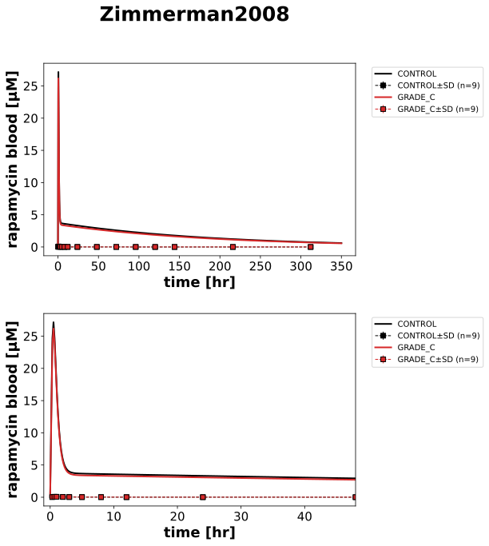

|  |
../../../../experiments/studies/zimmerman2008.py
from typing import Dict
from sbmlsim.data import DataSet, load_pkdb_dataframe
from sbmlsim.fit import FitMapping, FitData
from pkdb_models.models.rapamycin.experiments.base_experiment import (
RapamycinSimulationExperiment,
)
from pkdb_models.models.rapamycin.experiments.metadata import (
RapamycinMappingMetaData,
Tissue, Route, Dosing, ApplicationForm, Health, Fasting, Coadministration
)
from sbmlsim.plot import Axis, Figure
from sbmlsim.simulation import Timecourse, TimecourseSim
from pkdb_models.models.rapamycin.helpers import run_experiments
class Zimmerman2008(RapamycinSimulationExperiment):
"""Simulation experiment of Zimmerman2008."""
interventions = ["RAP15"]
groups = {
"CONTROL",
"GRADE_C",
}
colors = {
"CONTROL":"black",
"GRADE_C":"tab:red",
}
bodyweights = {
"CONTROL": 64.3,
"GRADE_C": 69.2,
}
def datasets(self) -> Dict[str, DataSet]:
dsets = {}
for fig_id in ["Fig1"]:
df = load_pkdb_dataframe(f"{self.sid}_{fig_id}", data_path=self.data_path)
for label, df_label in df.groupby("label"):
dset = DataSet.from_df(df_label, self.ureg)
# unit conversion
if label.startswith("rapamycin_"):
dset.unit_conversion("mean", 1 / self.Mr.rap)
dsets[label] = dset
# console.print(dsets)
#console.print(dsets.keys())
return dsets
def simulations(self) -> Dict[str, TimecourseSim]:
Q_ = self.Q_
tcsims = {}
for group in self.groups:
tcsims[f"rap_RAP15_{group}"] = TimecourseSim(
[Timecourse(
start=0,
end=350 * 60, # [min]
steps=2000,
changes={
**self.default_changes(),
# physiological changes
"BW": Q_(self.bodyweights[group], "kg"),
# dose
"PODOSE_rap": Q_(15, "mg"),
},
)]
)
#console.print(tcsims.keys())
return tcsims
def fit_mappings(self) -> Dict[str, FitMapping]:
mappings = {}
for group in self.groups:
mappings[f"fm_rap_RAP15_{group}"] = FitMapping(
self,
reference=FitData(
self,
dataset=f"rapamycin_RAP15_{group}",
xid="time",
yid="mean",
yid_sd="mean_sd",
count="count"
),
observable=FitData(
self, task=f"task_rap_RAP15_{group}", xid="time",yid="[Cveblood_rap]",
),
metadata=RapamycinMappingMetaData(
tissue=Tissue.BLOOD,
route=Route.PO,
application_form=ApplicationForm.SOLUTION,
dosing=Dosing.SINGLE,
health=Health.HEPATIC_IMPAIRMENT,
fasting=Fasting.FED, #FIXME: no information
coadministration=Coadministration.NONE
)
)
return mappings
def figures(self) -> Dict[str, Figure]:
fig = Figure(
experiment=self,
sid="Fig1",
name=f"{self.__class__.__name__}",
num_rows=2,
)
plots = fig.create_plots(xaxis=Axis(self.label_time, unit=self.unit_time), legend=True)
for k in range(2):
plots[k].set_yaxis(self.label_rap_blood, unit=self.unit_rap)
plots[1].xaxis.min = -1
plots[1].xaxis.max = 48
for group in self.groups:
for k in range(2):
# simulation
plots[k].add_data(
task=f"task_rap_RAP15_{group}",
xid="time",
yid="[Cveblood_rap]",
label=group,
color=self.colors[group],
)
# data
plots[k].add_data(
dataset=f"rapamycin_RAP15_{group}",
xid="time",
yid="mean",
yid_sd="mean_sd",
count="count",
label=group,
color=self.colors[group],
)
return {
fig.sid: fig,
}
if __name__ == "__main__":
run_experiments(Zimmerman2008, output_dir=Zimmerman2008.__name__)
{kind=link}